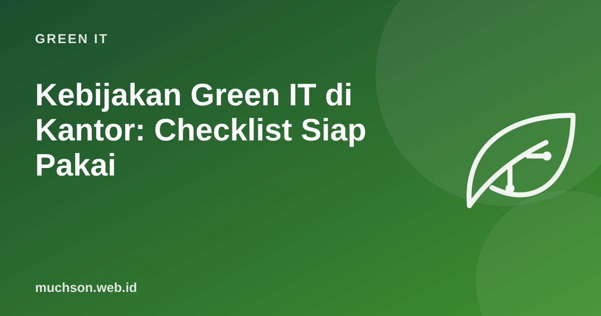

Kebijakan Green IT di Kantor: Checklist Siap Pakai
Banyak perusahaan punya target keberlanjutan di laporan tahunan, tetapi tidak punya aturan sederhana untuk hal sehari-hari: berapa lama laptop dipakai, ke mana perangkat lama dibawa, atau kapan server uji dimatikan. Kebijakan Green IT yang baik itu pendek, praktis, dan diukur. Berikut kerangka yang bisa Anda sesuaikan.

Tujuh area kebijakan
Mulai dari inventaris
Anda tidak bisa memperbaiki yang tidak diketahui. Buat daftar perangkat dan layanan: jenis, tanggal beli, pemilik, kondisi, dan perkiraan konsumsi energi. Spreadsheet sederhana sudah cukup untuk kantor kecil.
| Perangkat | Jumlah | Rata-rata umur | Tindakan |
|---|---|---|---|
| Laptop | 40 | 4,2 tahun | 12 unit kandidat upgrade SSD |
| PC desktop | 15 | 6 tahun | Evaluasi: ganti atau konsolidasi |
| Printer | 6 | 5 tahun | Konsolidasi ke 3 printer bersama |
| Server lokal | 2 | 7 tahun | Pertimbangkan migrasi ke cloud |
Ukur kemajuan
- Rata-rata umur pakai perangkat.
- Persentase perangkat yang dipakai ulang atau didaur ulang resmi.
- Konsumsi listrik kantor per karyawan.
- Jumlah halaman cetak per karyawan per bulan.
- Biaya dan emisi cloud per bulan.
Libatkan karyawan
- Jelaskan alasannya dengan data, bukan hanya larangan.
- Tunjuk "duta hijau" di setiap tim.
- Rayakan pencapaian: misalnya "tahun ini 25 laptop diperpanjang umurnya dengan SSD".
- Masukkan Green IT dalam orientasi karyawan baru.
Sederhana dulu
Mulai dari 3-5 aturan dengan dampak terbesar, ukur selama 3 bulan, lalu tambah. Kebijakan 40 halaman yang tidak dibaca tidak mengubah apa pun.
Tanya jawab
Apakah UMKM perlu kebijakan tertulis?
Satu halaman sederhana sudah cukup: aturan hemat daya, umur pakai, dan cara membuang perangkat. Yang penting dijalankan.
Bagaimana kaitannya dengan pelaporan ESG?
Data inventaris, energi, dan sampah elektronik dari kebijakan Green IT bisa menjadi bagian pelaporan keberlanjutan perusahaan, termasuk emisi lingkup 2 dan sebagian lingkup 3.
Siapa yang sebaiknya memimpin?
Kolaborasi tim IT, bagian umum/pengadaan, dan manajemen. Satu orang penanggung jawab membantu kebijakan tidak terlupakan.
Sumber dan bacaan lanjut
- ITU dan UNITAR: The Global E-waste Monitor 2024
- Green IT adalah (artikel terkait)
- Cloud dan keberlanjutan (artikel terkait)